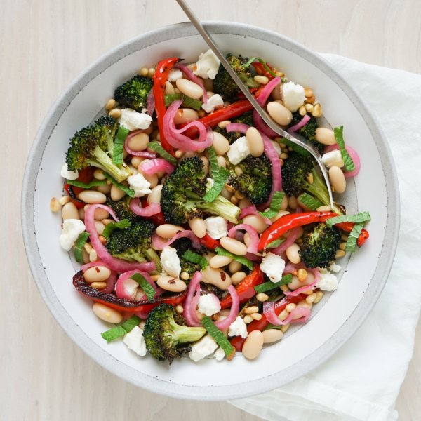

Roasted Broccoli Salad with Beans, Peppers, Pickled Onions & Pine Nuts

Total Time
40 min
Nutrition (Per Serving)
638.1 kcalCalories
22.9 gProtein
51.9 gCarbs
40.4 gFat
Full nutrition table
| Calories | 638.1 kcal |
| Total fat | 40.4 g |
| Saturated fat | 8.2 g |
| Trans fat | 0.3 g |
| Cholesterol | 25.1 mg |
| Sodium | 602.3 mg |
| Carbohydrates | 51.9 g |
| Fiber | 14.6 g |
| Sugars | 15.2 g |
| Protein | 22.9 g |
| Potassium | 1200.3 mg |
| Calcium | 326.7 mg |
| Iron | 5.8 mg |
| Vitamin A | 1185.9 IU |
| Vitamin C | 231.3 mg |
| Vitamin D | 4.5 IU |
Cookware
Ingredients
- 4 crownsbroccoli
- 2 (15 oz) canscannellini (white kidney) beans
- 1 (4 oz) pkgcrumbled feta cheese
- 1 small pkgfresh mint
- ½ cuppine nuts
- 2red bell peppers
- 1 mediumred onion
- brown sugar
- crushed red pepper
- extra virgin olive oil
- red wine vinegar
- salt
Steps
- Preheat oven to 450°F.
- Wash and dry the fresh produce.2 red bell peppers
4 crowns broccoli
1 small pkg fresh mint - Trim, seed, and slice bell peppers lengthwise into thin strips. Transfer to a large baking sheet pan.
- Separate broccoli into bite-sized florets. Add to the baking sheet with the bell peppers, drizzle with oil, and season with salt; stir to coat and spread out in an even layer.2 tbsp extra virgin olive oil
½ tsp salt - Place baking sheet in the oven (it doesn't have to be fully heated) and roast, stirring halfway through, until veggies are starting to char, 20-25 minutes. Remove from oven and set aside to cool.
- Meanwhile, place vinegar, sugar, and salt in a small bowl; stir to combine the pickling liquid.⅓ cup red wine vinegar
1 ½ tsp brown sugar
1 tsp salt - Peel, halve, and slice onion crosswise into thin half-moons. Add to the bowl with the pickling liquid, stir to combine, and set aside.1 medium red onion
- Preheat a skillet over medium heat.
- Once the skillet is hot, add pine nuts and cook, stirring often, until golden and fragrant, about 3 minutes. Transfer to another small bowl and set aside to cool.½ cup pine nuts
- Place oil, vinegar, salt, and crushed red pepper in a large bowl. Whisk to combine the dressing.¼ cup extra virgin olive oil
2 tbsp red wine vinegar
½ tsp salt
½ tsp crushed red pepper - Drain and rinse beans in a colander. Add to the bowl with the dressing.2 (15 oz) cans cannellini (white kidney) beans
- Pick mint leaves off the stems; discard stems and roughly chop the leaves. Add to the bowl.
- Add cooled veggies, pickled onions, pine nuts, and feta to the bowl. Gently stir to combine the salad.1 (4 oz) pkg crumbled feta cheese
- To serve, divide the salad between plates or bowls. Enjoy!